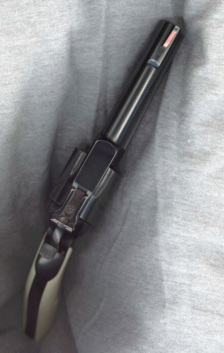
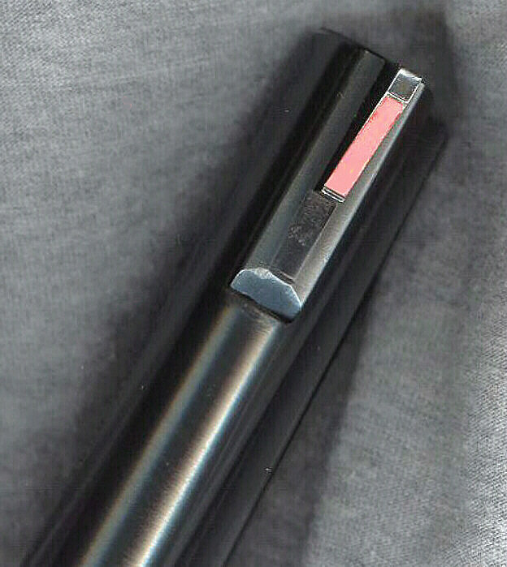

Some Gun Pix
by L. Neil SmithPage 3


Here's a couple pictures of the top of the .45 Superized Blackhawk, meant mostly to show off the wide hammer spur and the unusual front sight. All the modifications I've discussed are things people could do by themselves at home. One change that I will have to _have_ done is a modification of the spare cylinder, which is chambered for .45 ACP, and which I hardly ever use. (I have a funny—or pathetic—hunting story to tell you about that cylinder someday.) What I want is to get it counterbored to accommodate the useful and interesting cartridge .45 Auto Rim, so I'll be likelier to use it. It was my habit, years ago, to cut a shallow little bed in the front sight where the serrations had been, and lay in a strip of reflective glass-beaded "motorcycle tape". This one didn't photograph very well. It's still a nice, intense red-orange, although it appears to have slid a little so it's slightly crooked now. It's gone a lot of miles, believe me.
I'm contemplating replacing it with a bright red plastic insert of the type I put on S&W revolvers (it looks exactly like the factory job), but I probably won't do it until I find somebody who wants to underwrite the monthly "Home Gunsmithing" feature I want to do online. These will be simple projects that practically anyobody can do, with very little in the way of tools or other equipment. They will consist of both text and digital photographs.
In the right circles, such a thing ought to attract a lot of people to one's website, but it won't (and can't) be free. If anyone out there is serious and wants to discuss it, let me know: lneil@lneilsmith.org.